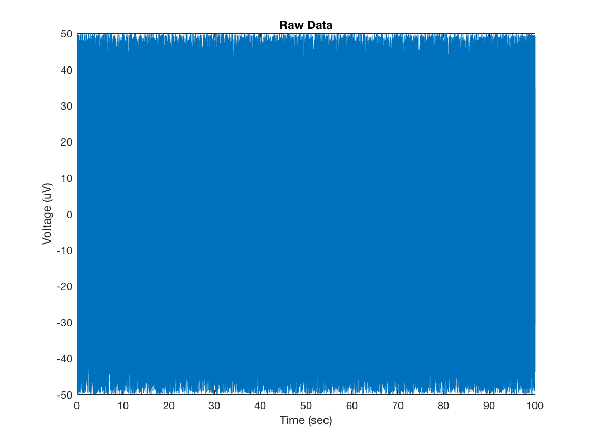
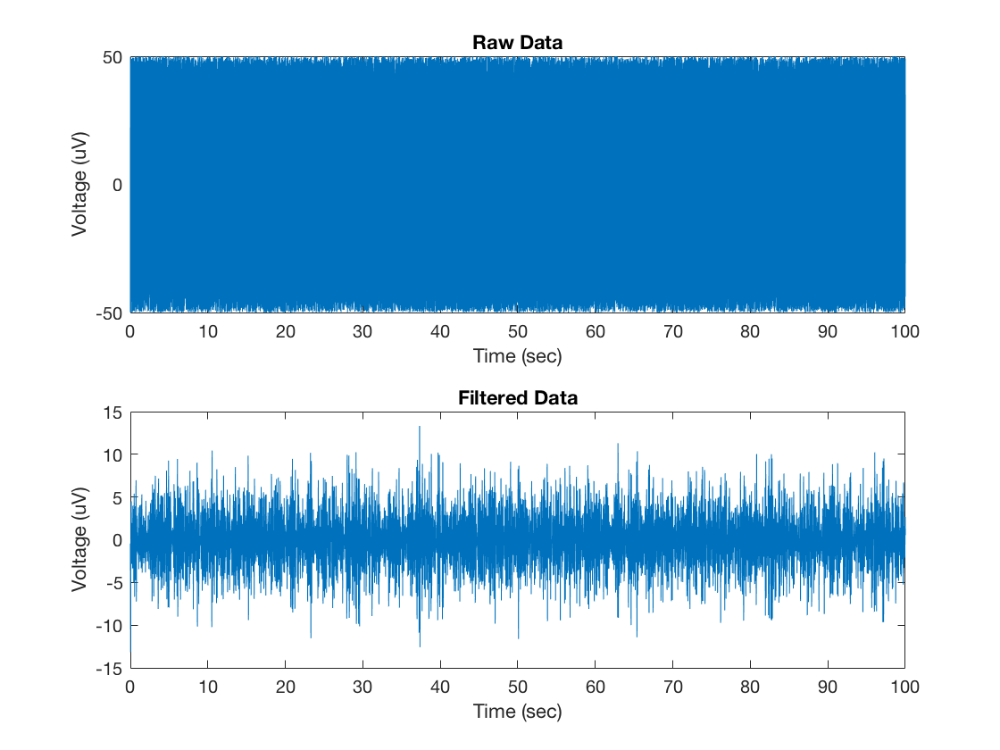
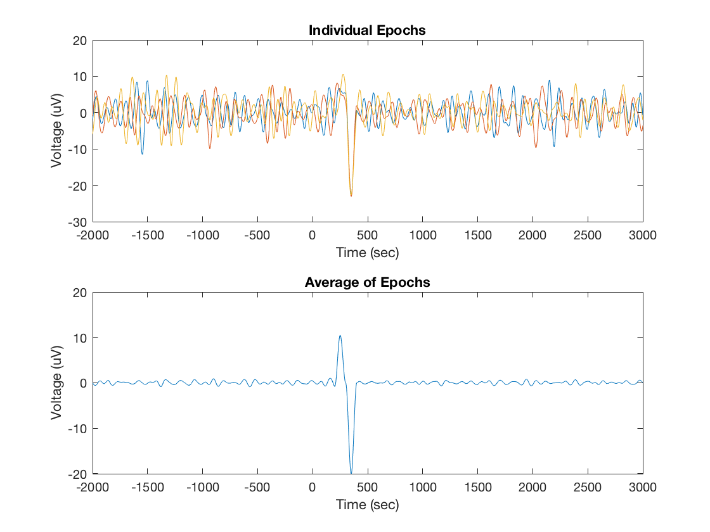
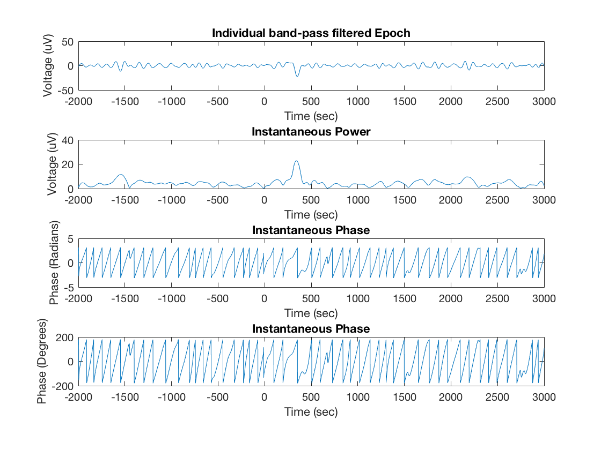
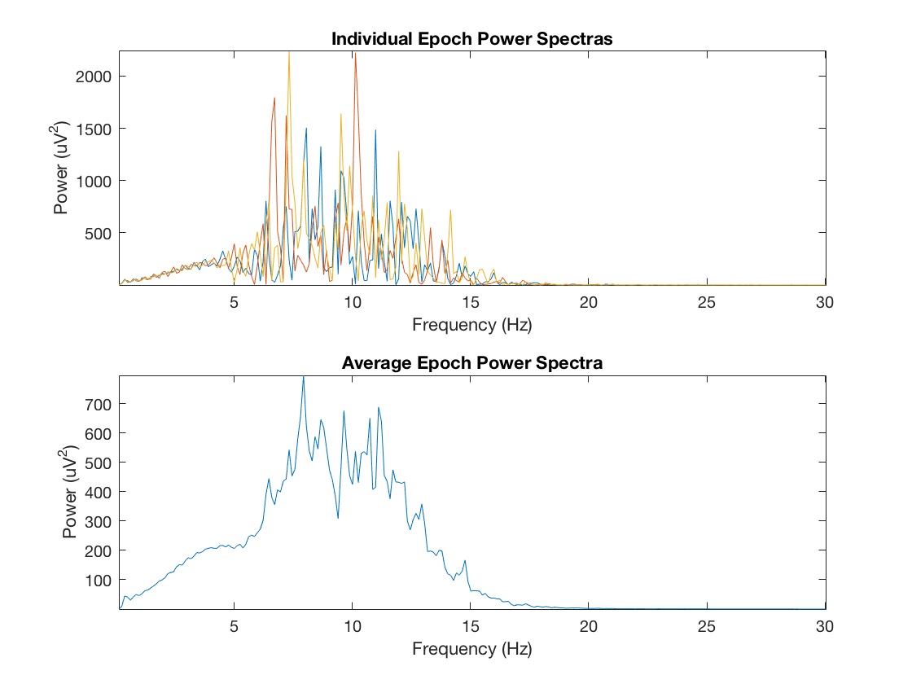
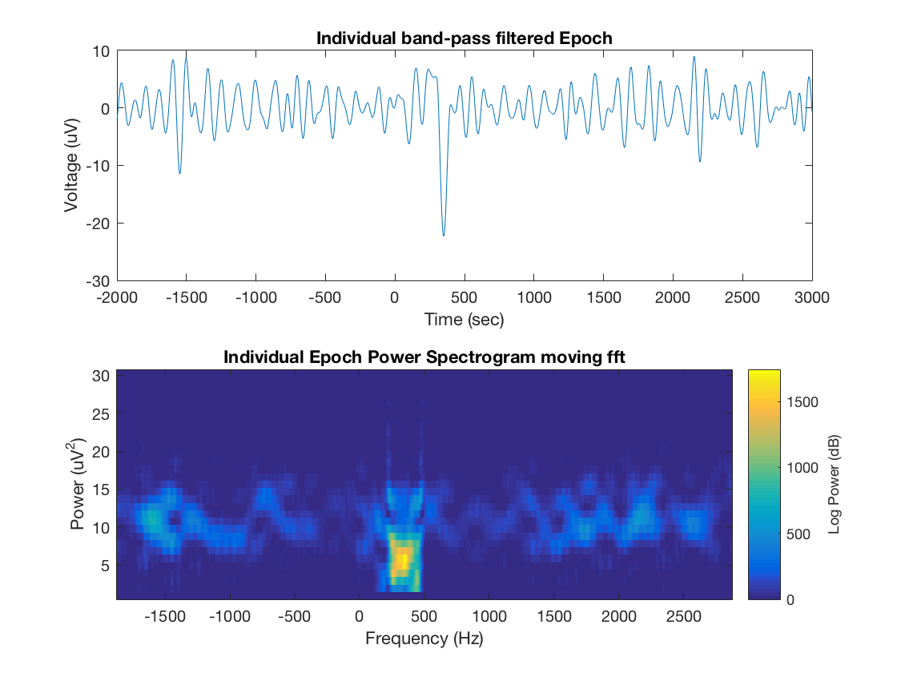
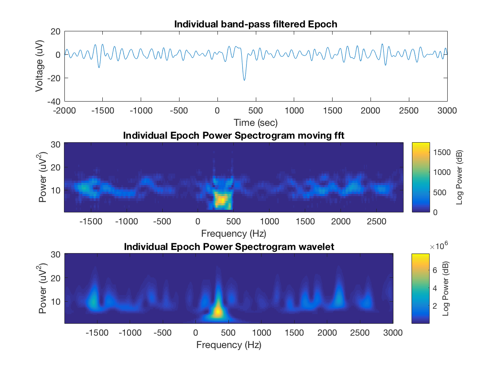
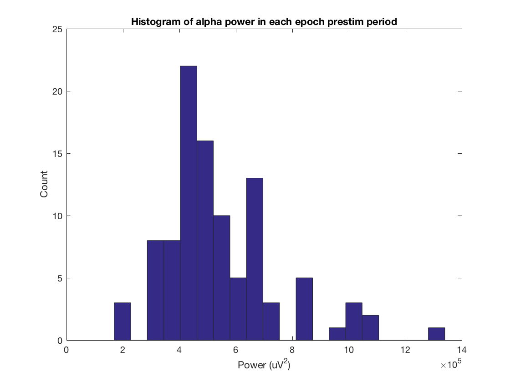
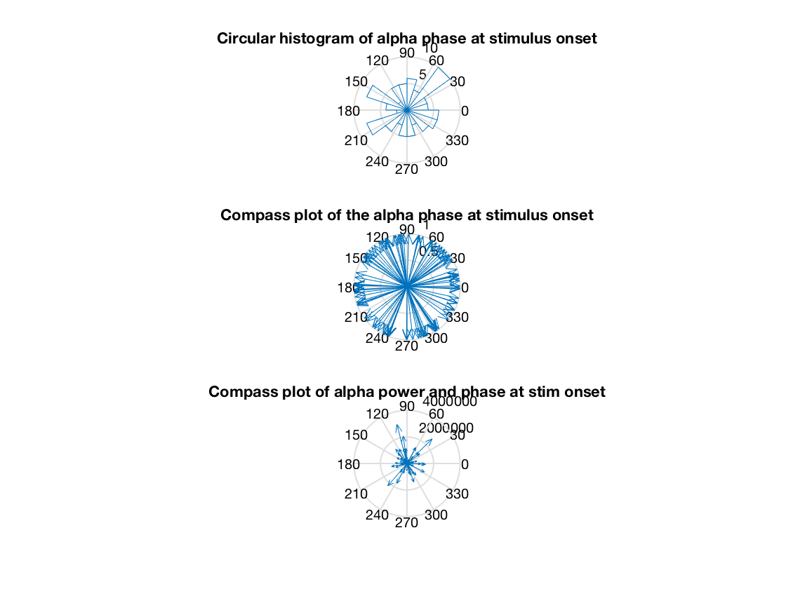

Contents
Analyses of EEG signals
Workshop on Quantitative Analysis of Neural Activity, Sat May 27 - Montreal Canada - Canadian Association for Neuroscience, Dr. Kyle Mathewson - Department of Psychology - University of Alberta
clear all close all clc
Discrete vs. Continuous
EEG is recorded as a discrete time serires, an array of numbers over time The sampling rate with which the data is digitized directly influences the range of frequencies that can be represented in the signal. Nyquist frequency is half the sampling rate, so sampling say 1000 Hz, we can represent frequencies up to 500 Hz in our data, anything larger will show up as an artifact due to aliasing (so we use hardware filters to avoid this)
% So lets make up some fake data: % consider a random set of numbers as our data srate = 1000; %Hz data_length = 100; %seconds speriod = 1/srate; %seconds data = rand(1,srate*data_length)*100 - 50 ; %centered at zero between -50 and 50 uV times = speriod:speriod:data_length; %time points figure; plot(times,data); xlabel('Time (sec)'); ylabel('Voltage (uV)'); title('Raw Data'); % use interp() or resample() to change sampling rate of data in either % direction, useful to equate the sampling rate of signals from two % modalities (heart rate and EEG)
filtering the data (bandpass, low-pass, high-pass)
next we want to use an offline filter to attenuate certain ranges of frequencies in the signal. This can be done with a butterworth filter, employed by the following function. One can use this to filter low frequencies (high pass), high frequencies (low pass), or to keep only a band of frequencies (band pass)
%here we will use a bandpass filter to filter our everything but alpha %oscillations. high_pass = 6; %lower cutoff low_pass = 14; %upper cutoff order = 2; %order of polynomial used in the filter, can be increased to sharpen the dropoff of the filter type = 'band'; %type of filter [filt_data] = illini_filter(data',srate,high_pass,low_pass,order,'band'); %run the filter (which plots a graph) % illini_filter.m - Created University of Illinois, based on kyle_filter by Kyle Mathewson with edits by Jamie Norton % [Y_filt] = illini_filter(Y,Fs,hipass,lopass,order,type) % Takes the time x channel data matrix Y, filters out a single frequency band, % Input is: % Y - data matrix, time points by channels % Fs - Sampling Frequency in Hz % hipass - lower bound of filter % lopass - upper bound of filter % order - filter order, % higher orders have steeper roll offs, but % can also be unstable % type - 'low' (low pass), 'high' (high pass), or 'band' (bandpass) % % Output is: % Y_filt - same as Y but not filtered subplot(2,1,1); plot(times,data); xlabel('Time (sec)'); ylabel('Voltage (uV)'); title('Raw Data'); subplot(2,1,2); plot(times,filt_data); xlabel('Time (sec)'); ylabel('Voltage (uV)'); title('Filtered Data'); % Try zooming in on the filtered data so you can see a few seconds of the % remaining alpha oscillations
Filtering data between 6 Hz and 14 Hz.
epoched data
if we have some repetition of a stimulus, we may want to visualize what the brain activity evoked by this stimulus looks like. We can cut out chunks of data (epochs) aligned to these stimuli, with data before and after the stimulus onset The noise on individual presentations limits our ability to see this. So we can average over many instances of a stimulus to minimize noise. The noise in the individual trials will be attenuated as a function of the square root of the number of trials, so there are deminishing returns to more trials We can also subtract out baseline shifts in voltage to align trials.
n_epochs = 100; % create fake stimuli and epochs of dat prestim = 2000; %time before stimulus poststim = 3000; %time after stimulus baseline = 200; %subtract mean voltage in this period before stim onset %pick some random times to be fake events stim_times = randi(length(times)-(prestim+poststim),1,n_epochs)+prestim; %set the times for each epoch and allocate space epoch_times = -prestim+1:poststim; epochs = zeros(n_epochs,length(epoch_times)); baselines = zeros(n_epochs,1); %for each epoch grab the data before and after the stim and substract %baseline for i_epoch = 1:n_epochs epochs(i_epoch,:) = filt_data(stim_times(i_epoch)-prestim+1 : stim_times(i_epoch)+poststim); %add in a fake ERP from 200:400 ms on each trial to represent the %evoked activity epochs(i_epoch,prestim+201:prestim+300) = epochs(i_epoch,prestim+201:prestim+300) + (hanning(100)*10)'; epochs(i_epoch,prestim+301:prestim+400) = epochs(i_epoch,prestim+301:prestim+400) - (hanning(100)*20)'; %baseline subtraction baselines(i_epoch) = mean(epochs(i_epoch,prestim-baseline:prestim)); epochs(i_epoch,:) = epochs(i_epoch,:) - baselines(i_epoch); end %plot the individual epochs and the average figure; subplot(2,1,1); plot(epoch_times,epochs(1:3,:)); xlabel('Time (sec)'); ylabel('Voltage (uV)'); title('Individual Epochs'); subplot(2,1,2); plot(epoch_times,mean(epochs,1)); xlabel('Time (sec)'); ylabel('Voltage (uV)'); title('Average of Epochs');
Hilbert Transform-
The first of four methods to represent the data time series in the frequency domain is called a Hilbert transform. First we use a narrow bandpass in the frequency band of interest (as shown above). Then computes the instantaneous phase and power
complex_data = hilbert(epochs(1,:)); %hilbert transform power_hilb = abs(complex_data); %get the real part as the power phase_hilb = angle(complex_data); %and the imaginary as the phase %plot the band-pass filtered data, as well as the power and phase at each time point %computed using the hilbert transform %note that now we can estimate the power and phase at each moment in the %epoch and run analyses over trials and subjects on these measures. Before %we try that lets look at three other ways to estimate power and phase %accross a wider range of frequencies figure; subplot(4,1,1); plot(epoch_times,epochs(1,:)); xlabel('Time (sec)'); ylabel('Voltage (uV)'); title('Individual band-pass filtered Epoch'); subplot(4,1,2); plot(epoch_times,power_hilb); xlabel('Time (sec)'); ylabel('Voltage (uV)'); title('Instantaneous Power'); subplot(4,1,3); plot(epoch_times,phase_hilb); xlabel('Time (sec)'); ylabel('Phase (Radians)'); title('Instantaneous Phase'); subplot(4,1,4); plot(epoch_times,rad2deg(phase_hilb)); xlabel('Time (sec)'); ylabel('Phase (Degrees)'); title('Instantaneous Phase');
fast-fourer transform -
Our time series can be converted to the frequency domain as a sum of weighted sine waves First we can compute a fast fourier transform on a chunk of data as a whole to create a signle frequency spectra for that data chunk (no matter the length) data must be of length 2^n frequency resolution depends on number of time points used data can be padded with zeros to increase frequency resolution and get to 2^n
Ubound = 30; %upper bound on fft %for each epoch run this fft function for i_epoch = 1:n_epochs [power_fft(i_epoch,:), phase_fft(i_epoch,:), freqs_fft] = kyle_fft(epochs(i_epoch,:),srate,Ubound); end % kyle_fft.m - Compute a FFT and get back the results % [power, phase, freqs] = kyle_fft(data,srate,Ubound) % now we plot the power spectra of each epoch, and the mean over epochs % we can see a peak in the alpha band since we have already band-pass % filtered the signal figure; subplot(2,1,1); plot(freqs_fft,power_fft(1:3,:)); xlabel('Frequency (Hz)'); ylabel('Power (uV^2)'); title('Individual Epoch Power Spectras'); axis tight; subplot(2,1,2); plot(freqs_fft,mean(power_fft,1)); xlabel('Frequency (Hz)'); ylabel('Power (uV^2)'); title('Average Epoch Power Spectra'); axis tight; %
moving window FFT,
Now we might want to have resolution in time for how the frequency changes we can move a window accross the data and compute the fft for the data on each window EEGLAB-pop_newtimef does this not covered here, but we can window the data to reduce edge artifacts. a major point here is the combination of uncertainty in time vs frequency. We can use longer windows to increase our frequency, but we loose resolution in time by doing so. We can't have both.
Ubound = 30; %upper bound of fft window_length = 2^8; %length of moving window in sampling points fft_length = 2^10; %the rest is padded with zeros (also sampling points) - keep same as above for no padding step_size = 1; % how far to go on each window step, 1 is the most resolved % reset some variables power_winfft = []; phase_winfft = []; freqs_winfft = []; for i_epoch = 1:2 %do for each epoch (just two for now for time) for i_window = 1+window_length/2:step_size:length(epochs(i_epoch,:))-window_length/2 %step through windows %take out the data segment segment = epochs(i_epoch,i_window-window_length/2:i_window+window_length/2-1); %can multiply by hanning window here to avoid edge artifacts %padd with zeros segment = [zeros((fft_length-window_length)/2,1)' segment zeros((fft_length-window_length)/2,1)']; %compute fft and save results [power_winfft(i_epoch,i_window-(window_length/2),:),phase_winfft(i_epoch,i_window-(window_length/2),:),freqs_winfft] = kyle_fft(segment,srate,Ubound); end end %get out new time stamps due to windows times_winfft = epoch_times(1+window_length/2:step_size:length(epochs(i_epoch,:))-window_length/2); %plot the original data and a single epoch spectrogram (the power in all %frequencies at each time point, a bunch of spectra stacked over time) figure; subplot(2,1,1); plot(epoch_times,epochs(1,:)); xlabel('Time (sec)'); ylabel('Voltage (uV)'); title('Individual band-pass filtered Epoch'); subplot(2,1,2); imagesc(times_winfft,freqs_winfft,squeeze(power_winfft(1,:,:))'); set(gca,'YDir','normal'); xlabel('Frequency (Hz)'); ylabel('Power (uV^2)'); title('Individual Epoch Power Spectrogram moving fft'); axis tight; c=colorbar; ylabel(c,'Log Power (dB)')
wavelet analysis
the final method of computing power and phase information is a wavelet analysis. In the fft analysis, given a single window size, there are much more cycles of higher frequencies used than in lower frequences. This gives poor time resolution in higher frequencies. To overcome this, a wavelet analysis modifies the number of cycles in the wavelet as a function of frequency. So instead of specifiying the window size, we specify the number of cycles (wavenumber). 3 cycles at 10 Hz is 300 ms long, 3 cycles at 100 Hz is 30 ms long, etc. This provides more equivalent time resolution over different frequencies.
% the math is similar, we are creating little wavelets, and convolving them % with the EEG data to see how well the two match up. % -pop_newtimef() in EEGLAB can also do this (default setting), in EEGLAB % you can also increase the wavenumber as frequencies increase % Assign Frequencies of interest freqs_wavelet = 1:.5:30; %linear % freqs_wavelet = (2^(1/4)).^(-.5:.5:20); %Log % width of the wavelet width = 3; %in cycles of frequency %reset variables power_wavelet = []; phase_wavelet = []; times_wavelet = []; % Compute Wavelet Analsis for i_epoch = 1:n_epochs [power_wavelet(i_epoch,:,:),times_wavelet,phase_wavelet(i_epoch,:,:)] = BOSC_tf(epochs(i_epoch,:),freqs_wavelet,srate,width); end times_wavelet = epoch_times; % keep original time stamps % [B,T,P]=BOSC_tf(eegsignal,F,Fsample,wavenumber); % % This function computes a continuous wavelet (Morlet) transform on % a segment of EEG signal; this can be used to estimate the % background spectrum (BOSC_bgfit) or to apply the BOSC method to % detect oscillatory episodes in signal of interest (BOSC_detect). % % parameters: % eegsignal - a row vector containing a segment of EEG signal to be % transformed % F - a set of frequencies to sample (Hz) % Fsample - sampling rate of the time-domain signal (Hz) % wavenumber is the size of the wavelet (typically, width=6) % % returns: % B - time-frequency spectrogram: power as a function of frequency % (rows) and time (columns) % T - vector of time values (based on sampling rate, Fsample) % P - estimated phase for each point in time and for each frequency - KEM 2014 %plot the original data and a single epoch spectrogram figure; subplot(3,1,1); plot(epoch_times,epochs(1,:)); xlabel('Time (sec)'); ylabel('Voltage (uV)'); title('Individual band-pass filtered Epoch'); subplot(3,1,2); imagesc(times_winfft,freqs_winfft,squeeze(power_winfft(1,:,:))'); set(gca,'YDir','normal'); xlabel('Frequency (Hz)'); ylabel('Power (uV^2)'); title('Individual Epoch Power Spectrogram moving fft'); axis tight; c=colorbar; ylabel(c,'Log Power (dB)') subplot(3,1,3); imagesc(epoch_times,freqs_wavelet,squeeze(power_wavelet(1,:,:))); set(gca,'YDir','normal'); xlabel('Frequency (Hz)'); ylabel('Power (uV^2)'); title('Individual Epoch Power Spectrogram wavelet'); axis tight; c=colorbar; ylabel(c,'Log Power (dB)')
Power
Now that we have a few ways of computing the power and phase of our EEG signals, we may want to test questions we have about the difference in power or phase at certain frequencies between certain times or conditions. For example, alpha power and alpha phase have both been shown to differ in the period before stimuli that are and are not detected (Mathewson et al., 2009, JNeurosci).
% This power and phase data can be found in EEGLAB as well in the ERSP % varialble, or as data from individual trials % Here we will practice computing the average power on each epoch in a window, % in some frequency band for example in the alpha band in the 1 second before stim onset win_freq = [6 14]; %range of freqs to average win_freq_i = [find(freqs_wavelet >= win_freq(1),1) find(freqs_wavelet >= win_freq(2),1)]; %get indicies win_time = [-1000 0]; %range of times to average win_time_i = [find(times_wavelet >= win_time(1),1) find(times_wavelet >= win_time(2),1)]; %get indicies mean_power = []; %for each epoch take out the chunk of data and get the mean in the window for i_epoch = 1:n_epochs data_chunk = power_wavelet(i_epoch,win_freq_i(1):win_freq_i(2),win_time_i(1):win_time_i(2)); mean_power(i_epoch) = mean(mean(data_chunk)); end %plot the power over epochs in a histogram figure; hist(mean_power,20); title('Histogram of alpha power in each epoch prestim period') ylabel('Count'); xlabel('Power (uV^2)'); % now we could do this for two different conditoins or two different groups % of participants, or two different time points, or channels, etc. Standard % statistical tests can be used.
Phase
Finally we may have certain hypothesis about how the phase of certin oscillations changes in different situations. We can pull the estimated phase at a single moment in time out of the data in the frequency domain above as well. Generally we can use angle(), imag() to get the angle of complex data Phase is expressed in radians or degrees circ_stat toolbox for doing stats on circular variables <https://www.jstatsoft.org/article/view/v031i10 Circ_stat toolbox> circ_stat() circ_mean(), r(), circular difference, circular clustering Most of these stats are based on the angular mean and angular standard deviation, as are more advanced EEG stats mentioned below (coherence)
% Here we will try a rose plot, angle plot... % pick a certain frequency and time and consider the phase over epochs % say 10 Hz phase and stimulus onset phase_freq = 10; %range of freqs to average phase_freq_i = find(freqs_wavelet >= phase_freq,1); %get indicies phase_time = 0; %range of times to average phase_time_i = find(times_wavelet >= phase_time,1); %get indicies epoch_phase = []; epoch_power = []; %for each epoch take out the chunk of data and get the mean in the window for i_epoch = 1:n_epochs %takes out the phase in radians epoch_phase(i_epoch) = phase_wavelet(i_epoch,phase_freq_i,phase_time_i); %also get the power at that time point epoch_power(i_epoch) = power_wavelet(i_epoch,phase_freq_i,phase_time_i); end %now we can represent that data on a circular scale in a few ways, showing %a histrogram rose plot, or individual data in a compass plot. summary %stats can be computed using the toolbox above, and comparisons can be made %between conditions using circular statistics. figure; subplot(3,1,1); rose(epoch_phase); title('Circular histogram of alpha phase at stimulus onset'); subplot(3,1,2); compass(sin(epoch_phase),cos(epoch_phase)); title('Compass plot of the alpha phase at stimulus onset'); subplot(3,1,3); compass(epoch_power.*sin(epoch_phase),epoch_power.*cos(epoch_phase)); title('Compass plot of alpha power and phase at stim onset');
Coherence
Intertrial coherence can be measured from the phase of a certain frequency on each trial. If the phase is very consistent over trials, then a large coherence measure will be obtained. This can be good for measuring phase resetting, and also entrainment to stimuli over trials. Still within a single channel one may want to measure to extent to which the phase of a slow frequency modulates the power of a higher frequency, the so called modulation index. This can be represented as a histogram in which different bins of slow frequency phase have different power of a high frequency, and tested with Chi squared distributions or permutations stats. Finally we may want to understand communication between recording sites we can look at this in terms of the modulation index above, but also in a few other ways. We can compute the correlation of the power envelope of certain frequencies (power_coher.m). We can also study how reliably the phase differs between two sites since consistent lagged phase betwen two sites may indicate communication. FOr this we can meausre the phase at each time point for each site, find the difference between sites at each time point, and compute the variance of those differences over time. A high amount of communication should be seens as a consistent difference in phase over time. (phase_coher.m) We can also use other measures like lagged cross correlation between channels or granger causality analysis accross channels to estimate the direction of influence and the lag in communication.